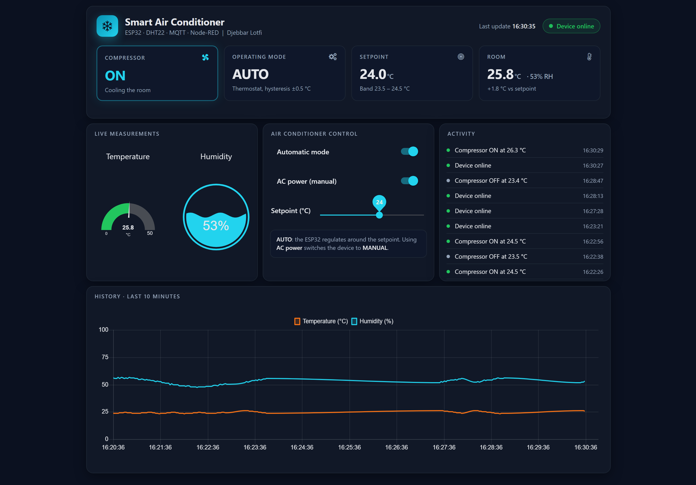
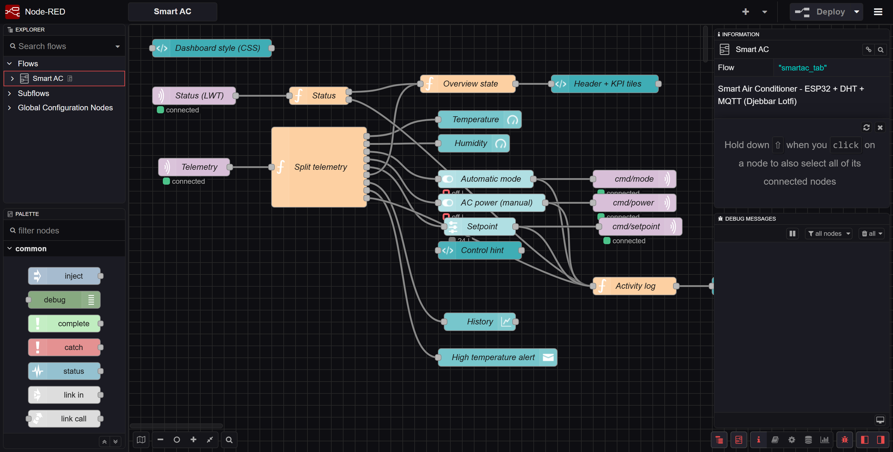

This project implements a smart air conditioner. An ESP32 microcontroller measures the room temperature and humidity with a DHT sensor and switches a relay that represents the AC compressor. It runs as an automatic thermostat with hysteresis (AUTO mode) or under direct user control (MANUAL mode). The device publishes its state every two seconds over MQTT and receives commands on dedicated topics. A Node-RED dashboard displays live measurements, history and alerts, and lets the user change the mode, the power state and the setpoint remotely.
The hardware is simulated with Wokwi for VS Code. The firmware is compiled with PlatformIO (Arduino framework), and the public broker broker.hivemq.com links the simulated device to the dashboard.
delay() calls in loop(): fully non-blockingAir conditioning is one of the largest energy consumers in buildings. A conventional unit is controlled locally with a remote control and gives no feedback to the user when they are away. Connecting it to a network allows remote monitoring, remote control and data logging, which are the three core functions of most IoT systems.
The objective of this homework is to design and demonstrate a complete, end-to-end IoT chain for an air conditioner:
| ID | Requirement |
|---|---|
| F1 | Read temperature and humidity every 2 s; ignore invalid (NaN) readings and log an error. |
| F2 | AUTO mode (default): AC ON if T > SP + 0.5 °C, OFF if T < SP − 0.5 °C, default SP = 24 °C. |
| F3 | MANUAL mode: the AC follows the ON/OFF command; a power command automatically selects MANUAL. |
| F4 | Setpoint adjustable remotely, accepted only between 16 and 30 °C. |
| F5 | Publish a JSON telemetry message every 2 s and immediately after each accepted command. |
| F6 | Report the device presence (online / offline) with a retained message and an MQTT Last Will. |
| F7 | Show the measurements and the state on a 16×2 LCD and on a web dashboard, with a history chart and a high-temperature alert (≥ 35 °C). |
millis(), no delay() in the main loop.The system follows the classic three-layer IoT architecture: a perception layer (ESP32, sensor and actuators), a network layer (WiFi and an MQTT broker using the publish/subscribe pattern) and an application layer (Node-RED dashboard). The device and the dashboard never talk to each other directly. Both are clients of the broker, which decouples them in space and time.
| Element | Choice | Justification |
|---|---|---|
| Microcontroller | ESP32 DevKit-C v4 | Built-in WiFi, dual core 240 MHz, enough RAM for TCP/IP and MQTT, supported by Wokwi and PlatformIO. |
| Sensor | DHT22 (DHT11 on hardware) | Single-wire digital temperature and humidity sensor; DHT11 and DHT22 share the same library and wiring. |
| Protocol | MQTT 3.1.1 | Lightweight publish/subscribe protocol designed for constrained devices; provides QoS levels, retained messages and Last Will. |
| Broker | HiveMQ public broker | Free and reachable from the Wokwi internet gateway (the simulator cannot reach localhost). |
| Application | Node-RED + dashboard | Low-code flow-based tool with native MQTT nodes and ready-made UI widgets. |
| Toolchain | PlatformIO + Wokwi for VS Code | Reproducible builds with declared library dependencies; Wokwi runs the exact compiled firmware. |
| Component | Wokwi part | Role |
|---|---|---|
| ESP32 DevKit-C v4 | board-esp32-devkit-c-v4 | Main controller, WiFi and MQTT client |
| DHT22 sensor | wokwi-dht22 | Temperature (−40…80 °C, ±0.5 °C) and humidity (0…100 %, ±2 %) |
| Relay module 5 V | wokwi-relay-module | Represents the AC compressor contactor |
| Blue LED "AC" + 220 Ω resistor | wokwi-led, wokwi-resistor | Lit through the relay contact, visualises the compressor |
| LCD 1602 with I²C backpack (0x27) | wokwi-lcd1602 (pins = i2c) | Local display of measurements and state |
| On-board LED (GPIO2) | part of the board | MQTT connection indicator |
| Part pin | ESP32 pin |
|---|---|
| DHT22 VCC | 3V3 |
| DHT22 SDA (data) | GPIO15 |
| DHT22 GND | GND |
| Relay VCC | 5V |
| Relay IN | GPIO26 |
| Relay GND | GND |
| Part pin | Connection |
|---|---|
| Relay COM | 3V3 |
| Relay NO | LED anode |
| LED cathode | 220 Ω → GND |
| LCD SDA / SCL | GPIO21 / GPIO22 |
| LCD VCC / GND | 5V / GND |
| Serial monitor | TX / RX |
diagram.json).Why the LED is wired through the relay contact. The blue "AC" LED is powered from 3V3 through the relay's COM → NO contact, not from a GPIO. It lights only when the relay coil is energised and the contact actually closes, so it proves that the actuator chain works. A real compressor contactor is wired the same way.
The assignment specifies a DHT11, but Wokwi only provides a DHT22 part. Both sensors use the same single-wire protocol, the same pin-out and the same Adafruit library, so moving to real hardware only takes one line of code:
// Wokwi only provides a DHT22 part, so the simulation uses DHT22. // On real DHT11 hardware, change to DHT11. #define DHTTYPE DHT22
| Characteristic | DHT11 | DHT22 (AM2302) |
|---|---|---|
| Temperature range / accuracy | 0…50 °C / ±2 °C | −40…80 °C / ±0.5 °C |
| Humidity range / accuracy | 20…80 % / ±5 % | 0…100 % / ±2–5 % |
| Resolution | 1 °C, 1 % | 0.1 °C, 0.1 % |
| Max sampling rate | 1 Hz | 0.5 Hz (one reading every 2 s) |
The 2 s sampling period was chosen to respect the DHT22 limit, so the same firmware works with both sensors. With a DHT11, the 1 °C resolution is coarser than the ±0.5 °C hysteresis band. The thermostat still works, but it switches in whole-degree steps.
The firmware is written in C++ with the Arduino framework and built with PlatformIO (board = esp32dev). It is a single, commented source file (src/main.cpp) organised in functional blocks.
| Block / function | Responsibility |
|---|---|
setup() | Configure the pins, start the DHT and the LCD (shows "Connecting..."), build the unique client ID, start WiFi, configure the MQTT server and callback. |
loop() | Calls three non-blocking handlers in sequence: handleWifi(), handleMqtt(), handleSensor(). |
handleWifi() | Detects a lost connection and restarts the association every 10 s. |
handleMqtt() | Services the client (mqtt.loop()) or retries the connection every 5 s with the Last Will; on success publishes online and subscribes to the commands. |
handleSensor() | Every 2 s reads the DHT, rejects NaN, then calls updateControl(), updateLcd(), publishTelemetry(). |
updateControl() | Thermostat (AUTO) or manual control (MANUAL), drives the relay through setAc(). |
onMqttMessage() | Parses and validates the commands, then updates the state and publishes immediate feedback. |
updateLcd(), publishTelemetry() | Output formatting: two 16-character LCD lines and the JSON telemetry message. |
The main loop never waits. Each handler compares millis() with its last execution time and returns immediately when it isn't due yet. The loop therefore runs thousands of times per second, and incoming MQTT commands are processed with a latency of a few milliseconds even while the device is reconnecting or waiting for the next sensor reading. A delay(2000) would freeze command handling and the MQTT keep-alive for two seconds at a time.
void loop() { handleWifi(); // reconnect WiFi if lost (every 10 s) handleMqtt(); // mqtt.loop() or reconnect (every 5 s) handleSensor(); // read DHT + control + publish (every 2 s) } void handleSensor() { unsigned long now = millis(); if (now - lastSensorMs < SENSOR_INTERVAL) return; // not yet: return at once lastSensorMs = now; float t = dht.readTemperature(); float h = dht.readHumidity(); if (isnan(t) || isnan(h)) { Serial.println("[DHT] Read error (NaN), reading skipped"); return; } temperature = t; humidity = h; updateControl(); updateLcd(); publishTelemetry(); }
The pattern now - last >= interval uses unsigned arithmetic, so it stays correct when millis() overflows after about 49.7 days.
The broker refuses two clients with the same client ID: the second one disconnects the first. A unique ID is therefore built from the factory MAC address stored in the ESP32 eFuses. When the device connects, it registers a Last Will and Testament (LWT). If the TCP connection drops without a clean disconnect (power loss, crash, network failure), the broker itself publishes offline on the status topic after the keep-alive timeout.
// Unique MQTT client ID built from the chip MAC address uint64_t mac = ESP.getEfuseMac(); snprintf(clientId, sizeof(clientId), "esp32-ac-%04X%08X", (uint16_t)(mac >> 32), (uint32_t)mac); // Last Will: broker publishes "offline" (retained, QoS 1) if we disappear if (mqtt.connect(clientId, TOPIC_STATUS, 1, true, "offline")) { digitalWrite(MQTT_LED_PIN, HIGH); mqtt.publish(TOPIC_STATUS, "online", true); // retained mqtt.subscribe(TOPIC_CMD_MODE, 1); mqtt.subscribe(TOPIC_CMD_POWER, 1); mqtt.subscribe(TOPIC_CMD_SETPOINT, 1); publishTelemetry(); } else { Serial.printf("[MQTT] Failed, rc=%d, retry in %lus\n", mqtt.state(), MQTT_RETRY_INTERVAL / 1000); }
Both online and the LWT offline are retained, so a dashboard that starts later immediately receives the last known presence state instead of waiting.
All commands are trimmed and compared case-insensitively. Invalid values are rejected and logged, so a malformed message can never put the device in an undefined state. The setpoint is parsed with strtof() and an end-pointer check, so "25abc" or an empty string are refused, and it must lie in the 16–30 °C range.
else if (strcmp(topic, TOPIC_CMD_POWER) == 0) { if (upper == "ON" || upper == "OFF") { if (mode != MODE_MANUAL) mode = MODE_MANUAL; // a power command forces MANUAL manualPower = (upper == "ON"); changed = true; } } else if (strcmp(topic, TOPIC_CMD_SETPOINT) == 0) { char *end = nullptr; float value = strtof(msg.c_str(), &end); bool isNumber = (end != msg.c_str()) && (*end == '\0'); if (isNumber && value >= SETPOINT_MIN && value <= SETPOINT_MAX) { setpoint = value; changed = true; } } if (changed) { updateControl(); updateLcd(); publishTelemetry(); } // immediate feedback
The LCD shows Connecting... at boot, then two lines refreshed after every reading or command. Each line is padded to 16 characters, so leftover characters from a longer previous text are erased without calling lcd.clear(), which would make the display flicker.
T:27.5C H: 55% // line 1: temperature and humidity AUT SP:24 AC:ON // line 2: mode (AUT/MAN), setpoint, compressor
With a half-degree setpoint, the "AC:" label is dropped (for example AUT SP:24.5 OFF) so the line still fits in 16 characters.
Library (PlatformIO lib_deps) | Use |
|---|---|
adafruit/DHT sensor library + Adafruit Unified Sensor | DHT11/DHT22 single-wire protocol |
knolleary/PubSubClient | MQTT 3.1.1 client (publish, subscribe, LWT) |
marcoschwartz/LiquidCrystal_I2C | HD44780 LCD over the PCF8574 I²C backpack |
The project compiles with no errors (pio run → SUCCESS). Memory usage: RAM 14.8 % (48,592 / 327,680 bytes) and Flash 70.5 % (924,712 / 1,310,720 bytes). Most of the flash is taken by the WiFi and TCP/IP stacks.
MQTT is a publish/subscribe protocol over TCP. Clients never address each other. They publish messages to topics on a broker, and the broker forwards each message to every client subscribed to that topic. All topics of the project share the hierarchical base enp_iot/lotfi/ac, which makes them unique on the public broker and easy to filter.
Topic (base enp_iot/lotfi/ac) | ESP32 | Payload | QoS | Retain |
|---|---|---|---|---|
/telemetry | publish | JSON state (see 5.2), every 2 s and after each command | 0 | no |
/status | publish | online on connect · offline as Last Will | 1 (LWT) | yes |
/cmd/mode | subscribe | AUTO | MANUAL | 1 | no |
/cmd/power | subscribe | ON | OFF (forces MANUAL) | 1 | no |
/cmd/setpoint | subscribe | number, 16 … 30 (°C) | 1 | no |
{ "temperature": 27.5, "humidity": 55.0, "ac": "ON", "mode": "AUTO", "setpoint": 24.0 }
The message carries the complete state of the device, not just the measurements. Any subscriber can rebuild the full picture from a single message, and the dashboard uses it to synchronise its controls (section 7.3). If no valid reading is available yet, the measurement fields are sent as JSON null.
In AUTO mode, the ESP32 is an on/off (bang-bang) controller with a dead band of width 2H = 1 °C centred on the setpoint SP. With the default values (SP = 24 °C, H = 0.5 °C):
| Condition | Action |
|---|---|
| T > SP + H = 24.5 °C | Compressor ON (cooling) |
| T < SP − H = 23.5 °C | Compressor OFF |
| 23.5 °C ≤ T ≤ 24.5 °C | Keep the current state (memory effect) |
void updateControl() { if (mode == MODE_MANUAL) { setAc(manualPower); return; } if (isnan(temperature)) return; // no valid reading yet if (temperature > setpoint + HYSTERESIS) setAc(true); else if (temperature < setpoint - HYSTERESIS) setAc(false); // inside [SP-0.5 ; SP+0.5] the relay keeps its state }
Why hysteresis prevents relay chattering. With a single threshold (ON if T > 24, OFF otherwise), sensor noise of a few tenths of a degree around 24 °C would make the relay switch on and off every reading, every 2 s. This chattering wears out the relay contacts by arcing and, above all, damages a real compressor, which must not be restarted within a few minutes of stopping. With the 1 °C dead band, once the AC starts, the room has to cool by a full degree before it stops, and warm by a full degree before it restarts. Noise smaller than the band can no longer cause a switch, and the cycle length is set by the thermal dynamics of the room rather than by noise. A wider band means fewer cycles but larger temperature swings: 1 °C is a good compromise between comfort and equipment life.
In MANUAL mode the thermostat is bypassed and the relay follows the last power command. The user can force the AC on or off whatever the temperature, for example to test the unit or to ventilate.
cmd/mode: manualPower is initialised with the current relay state, so the compressor doesn't change abruptly at the moment of the switch.The whole application layer is a single Node-RED flow ("Smart AC") delivered as an importable node-red/flows.json file. A single mqtt-broker configuration node (broker.hivemq.com:1883) is shared by all MQTT nodes.

| Node | Type | Role |
|---|---|---|
| Telemetry | mqtt in | Subscribes to /telemetry, parses the JSON. |
| Split telemetry | function (9 outputs) | Dispatches each field to its widget, builds the two chart series, detects state changes for the activity log, and raises the alert once when T ≥ 35 °C (re-armed below 35 °C). |
| Status (LWT) | mqtt in + function | Converts online/offline into the header badge and an activity-log event. |
| Overview state | function | Merges status and telemetry into one state object (with the time of the last update) for the header template. |
| Automatic mode / AC power / Setpoint | ui_switch, ui_slider | User commands, sent to cmd/mode, cmd/power, cmd/setpoint through three mqtt out nodes (QoS 1). The slider sends only when released. |
| Activity log | function + ui_template | Keeps the last 12 events (commands, state changes, presence, alerts) in node context. |
| Temperature / Humidity / History | ui_gauge, ui_chart | Live gauges and a 10-minute line chart. |
| High temperature alert | ui_toast | Red pop-up notification. |
| Dashboard style | ui_template (global) | CSS theme injected into the page head. |
| Area | Content |
|---|---|
| Header | Title, Device online/offline badge driven by the Last Will, time of the last telemetry. |
| KPI tiles | Compressor state (animated fan when cooling), operating mode, setpoint with its hysteresis band, room temperature/humidity and the difference from the setpoint. |
| Live measurements | Temperature gauge 0–50 °C (blue < 22 °C, green 22–30 °C, red > 30 °C) and humidity wave gauge 0–100 %. |
| Air conditioner control | "Automatic mode" switch, "AC power (manual)" switch, "Setpoint" slider 16–30 °C in 0.5 °C steps. |
| Activity | Time-stamped log of commands and events. |
| History | Temperature and humidity over the last 10 minutes. |
A common mistake in IoT dashboards is to let the controls show what the user clicked rather than what the device is actually doing. Here, every control is driven by the telemetry. The switches and the slider receive the mode, ac and setpoint fields of every telemetry message, with the passthru: false option:
"mode":"MANUAL".The device always holds the state. The dashboard is only a view of it plus a way to send requests. This is the same principle as the "device shadow" in commercial IoT platforms.
| Check | Method and result |
|---|---|
| Firmware compilation | pio run: build SUCCESS, no errors; RAM 14.8 %, Flash 70.5 %. Binaries produced where wokwi.toml expects them (.pio/build/esp32dev/firmware.bin and .elf). |
| Node-RED flow integrity | The flow file is generated and checked automatically: valid JSON, 29 nodes, no duplicate IDs, every wire, group, tab and broker reference resolves to an existing node, and every function node's code compiles. |
| Broker connectivity | Node-RED log: "Connected to broker: mqtt://broker.hivemq.com:1883". |
| Dashboard end to end (application side) | Telemetry messages in the exact firmware format were published to the project topics on the public broker. The dashboard received them, and the gauges, tiles, chart, online badge and activity log updated correctly (Figure 8). |
The test plan below exercises every requirement. The temperature is changed live by clicking the DHT22 in the Wokwi simulator and moving its slider. Initial conditions: T = 28 °C, H = 55 %, SP = 24 °C, AUTO mode.
| # | Action | Expected result | Req. |
|---|---|---|---|
| 1 | Start the simulation | LCD "Connecting...", then the readings. On-board LED ON (MQTT connected). 28 > 24.5, so the relay closes and the blue AC LED lights. Dashboard: Device online, compressor ON. | F1 F2 F6 |
| 2 | Set T to 22 °C | 22 < 23.5, so the AC turns OFF: LED off, LCD AC:OFF, dashboard updates within 2 s. | F2 |
| 3 | Set T to 24.2 °C | Inside the dead band: no change (stays OFF). This demonstrates the hysteresis. | F2 |
| 4 | Set T to 25 °C | 25 > 24.5, so the AC turns ON. | F2 |
| 5 | Set T back to 24.2 °C | Inside the dead band: stays ON. Same temperature as step 3 with the opposite state, which shows the memory effect. | F2 |
| 6 | Set T to 36 °C | Red toast "High temperature" on the dashboard (once), alert entry in the activity log. | F7 |
| 7 | Toggle "AC power (manual)" OFF | Serial [MQTT] RECV .../cmd/power -> "OFF". Mode becomes MANUAL ("Automatic mode" switch turns off by itself), AC OFF although T = 36 °C, LCD MAN. | F3 F5 |
| 8 | Toggle power ON, then OFF | Relay and LED follow each command immediately. | F3 |
| 9 | Turn "Automatic mode" ON | Thermostat resumes: T = 36 > 24.5, so the AC turns ON. | F2 |
| 10 | Set T to 28 °C, move the setpoint slider to 30 and release | LCD SP:30. 28 < 29.5, so the AC turns OFF. Activity log: "Setpoint set to 30.0 °C". | F4 |
| 11 | Publish 45 on cmd/setpoint (e.g. with MQTT Explorer) | Serial "Setpoint rejected (must be 16..30)". Setpoint unchanged. | F4 |
| 12 | Stop the simulator | After the keep-alive timeout (~20 s) the broker publishes the LWT. Dashboard badge: Device offline. | F6 |
Serial monitor traces. Every publication and every received command is logged with a prefix ([WiFi], [MQTT] PUB, [MQTT] RECV, [CMD], [DHT], [AC]), which makes it easy to follow the behaviour during the demonstration.
broker.hivemq.com is shared by everyone. Anyone who knows the topic names can read the telemetry or send commands to the air conditioner. This is acceptable for a demonstration, but not for a real installation.| Improvement | Description |
|---|---|
| Security | Private broker (e.g. Mosquitto) with username/password, TLS on port 8883 (WiFiClientSecure), per-topic ACLs so that only the dashboard can publish on cmd/#. |
| Data storage | Store the telemetry in a time-series database (InfluxDB) and build long-term dashboards in Grafana (daily consumption, compressor duty cycle). |
| Real AC control | Replace the relay with an IR LED and the IRremoteESP8266 library to send the manufacturer's codes (mode, temperature, fan speed) to a real split unit. |
| Persistence | Save the setpoint and the mode in flash (Preferences/NVS) so they survive a reboot. |
| Compressor protection | Minimum OFF time (anti-short-cycle delay of about 3 min) before restarting. |
| Scheduling and presence | Night/eco schedules, presence detection (PIR) to stop cooling empty rooms. |
| Maintenance | Over-the-air (OTA) firmware updates; Home Assistant integration through MQTT discovery. |
This project delivers a complete IoT chain for a smart air conditioner, from the sensor to the user interface. The ESP32 measures the environment, regulates the temperature locally with a hysteresis thermostat that protects the actuator from chattering, and stays fully responsive thanks to a non-blocking design. MQTT decouples the device from the application: telemetry carries the full device state, commands use QoS 1, and a retained Last Will gives the dashboard reliable presence detection. The Node-RED dashboard provides monitoring, history, alerts and remote control, and stays synchronised with the real device state without command loops.
The work covers the main concepts of the course: sensor acquisition, actuation, embedded control, the publish/subscribe pattern, QoS and retained messages, Last Will and Testament, and data visualisation. The whole system runs in simulation and is reproducible on any computer. The main next step towards a real product is security (private broker with TLS and authentication), followed by data storage and infrared control of a real unit.
smart-ac-iot/ ├── platformio.ini # board esp32dev, Arduino framework, library dependencies ├── wokwi.toml # points Wokwi to .pio/build/esp32dev/firmware.bin / .elf ├── diagram.json # simulated circuit (ESP32, DHT22, relay, LED, LCD) ├── src/main.cpp # firmware ├── node-red/flows.json # importable Node-RED flow + dashboard └── README.md # documentation
smart-ac-iot folder and build: pio run.F1 → Wokwi: Start Simulator. The serial monitor shows the connection and the MQTT traffic.npm install -g node-red, then start it with node-red.node-red-dashboard.node-red/flows.json → Deploy.